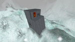
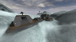

Acid Rain
The trouble ain't that there is too many fools, but that the lightning ain't distributed right. -- Mark Twain
6 Caps - Desert - Lightning strikes within 200m of wreck - Map by RavensBro, z0dd, CleverClothe


Blastside
The BloodEagle and Diamond Sword battle each other at close range with their massive flying bases.
5 Caps - Lush - No vehicle stations - Map by Nefilim (assisted: Sparky, ToKrZ, z0dd)


Broadside
The BloodEagle and Diamond Sword battle each other at close range with their massive flying bases.
5 Caps - Lush - No vehicle stations - Map by Nefilim (assisted: Sparky, ToKrZ, z0dd)


Confusco
My name is Ozymandias, king of kings: Look on my works, ye Mighty, and despair! -- Percy Bysshe Shelley
8 Caps - Desert - No vehicle stations - Map by Nefilim (assisted: z0dd)


Dangerous Crossing
Two bases, each with one flag, separated by a large chasm. A lengthy bridge joins the two. A straight line may be the quickest route, but not necessarily the safest in this mission...
8 Caps - Lush - No vehicle stations - Map by Nefilim (assisted: Sparky, z0dd)


Desert of Death
The Children of the Phoenix and Blood Eagle face each other for control of the desert planet of Omicron Argentis VI, home to a long-dead race known as the Titans.
4 Caps - Desert - No stations - Map by Nefilim (assisted: z0dd)


Gorgon
We the survivors are not the true witnesses; those who saw the Gorgon have not returned to tell about it. -- Primo Levi
6 Caps - Desert - Neutral inventorys located above ground - Map by Nefilim (assisted: z0dd)


Hillside
It's easier to go down a hill than up it but the view is much better at the top. -- Henry Ward Beecher
6 Caps - Lush - Map by Nefilim (assisted: z0dd)


IceRidge
The Starwolf and Blood Eagle battle each other for control of Zeta Hercules XI, a cold, inhospitable world, even by Starwolf standards.
10 Caps - Ice - No vehicle stations - Map by Nefilim (assisted: z0dd)


LakeFront
Butchers is an apt title for them, but they shed blood without purpose, and God shall abandon them. -- Firelord Anton Malderi on the Blood Eagle, 3937 CE
6 Caps - Lush - Map by ZOD (assisted: Akira, z0dd)


Magmatic
War does not determine who is right - only who is left. -- Bertrand Russell
6 Caps - Volcanic - Map by Infamous Butcher (assisted: z0dd)


Raindance
The Blood Eagle and Diamond Sword battle each other on the verdant world of Tawa Mangahela.
8 Caps - Lush - Map by Nefilim (assisted: z0dd)


Ramparts
He who defends everything, defends nothing -- Frederick the Great
6 Caps - Lush - No vehicle stations - Map by z0dd


Rollercoaster
The Phoenix and Blood Eagle face off amid the rolling hills of Deus Sanguinius.
8 Caps - Desert - Each solar panel only powers the force field below it - Map by Nefilim (assisted: z0dd)


Sandstorm
They defended the grains of sand in the desert to the last drop of their blood. -- Gamal Abdel Nasser
6 Caps - Desert - Map by Nefilim (assisted: z0dd, CleverClothe)


Scarabrae
The Blood Eagle and Diamond Sword battle each other with their massive flying bases.
4 Caps - Lush - Central Tower available for the taking - Map by Nefilim (assisted: ToKrZ, z0dd)


Shock Ridge
Observe your enemies, for they first find out your faults. -- Antisthenes
6 Caps - Ice - Map by Rilke (assisted: z0dd)


SnowBlind
The Starwolf and Blood Eagle battle each other in the inhospitable crags of the ice world of Ymir.
4 Caps - Ice - No vehicle stations - Map by Nefilim (assisted: z0dd)



Starfallen
Aim for the moon. If you miss, you may hit a star. -- W. Clement Stone
6 Caps - Lush - Map by v5planet (assisted: z0dd)


Stonehenge
The Blood Eagle and Diamond Sword battle one another at close quarters.
8 Caps - Lush - No vehicle stations - Map by Nefilim (assisted: z0dd)


Subzero
Death comes to all, but great achievements build a monument which shall endure until the sun grows cold. -- Ralph Waldo Emerson
7 Caps - Ice - No vehicle stations - Map by Nefilim (assisted: z0dd)



Surreal
Do not go gentle into that good night, Rage, rage against the dying of the light. -- Dylan Thomas
6 Caps - Lush - No vehicle stations - Map by Nefilim (assisted: z0dd)


Titan
Where talent is a dwarf, self-esteem is a giant. -- J. Petit-Senn
6 Caps - Lush - No vehicle stations - Map by z0dd (assisted: Akira, CleverClothe, Nefilim)


WhiteDwarf
Make it new. -- Ezra Pound
8 Caps - Volcanic - No vehicle stations - Map by Rilke (assisted: z0dd, Peachskin)


Abaddon
Only the dead have seen the end of war. -- Plato
8 Caps - Volcanic - Tower items are self powered - Map by Nefilim (Editing: z0dd)


BaNsHee
Look out for that tree!
7 Caps - Lush - Open Flag - Map by Techlogic (base by Akira)


BeachBlitz
I've got a lovely bunch of coconuts, fiddle dee dee. -- Danny Kaye
8 Caps - Desert - All power sources linked - Map by DOX (Editing: z0dd)


Beggar's Run
My name is Ozymandias, king of kings: Look on my works, ye Mighty, and despair! -- Percy Bysshe Shelley
8 Caps - Desert - Base/Deck components aligned - Flag stand stop bug fixed - Damage through flagstand floor eliminated - Map by Dynamix (Editing: =Sabre=)


BlueMoon
Blue moon..., You saw me standing alone... -- Rodgers & Hart
6 Caps - Lush - Map by teslatrooper (Editing: z0dd)


Boss
Heavy is the head that wears the crown. -- William Shakespeare
8 Caps - Lush - No vehicle stations - Map by Rilke (Editing: z0dd)


Celerity
Fuck running in tunnels on Mino...lets take it outside and see wtf is up! -- A PU asshat
10 Caps - Lush - No vehicle stations, cg whoring welcome - Map by {FSC}Meanie (Editing: Flyguy)


Chokepoint
No quote
8 Caps - Desert - Map by =Sabre=


Cinereous
By the rude bridge that arched the flood, Their flag to April's breeze unfurled, Here once the embattled farmers stood, And fired the shot heard round the world. --Ralph Waldo Emerson, Concord Hymm
8 Caps - Volcanic - Invs are out in the open, No generators. - Map by Killin is fun (Editing: Flyguy)


Clusterfuct
We're surrounded -- Custer
10 Caps - Lush - Enemy base is on both sides of your flag - Map design by Techlogic


CrossFire
Save the strong, lose the weak. Never turning the other cheek -- Stevie Ray Vaughn
6 Caps - Lush - Map by =Sabre=


Curtilage
Wars have never hurt anybody except the people who die -- Salvador Dali
6 Caps - Lush - Semi-open flag - Map design by Techlogic


Damnation
By the flow of the inland river, Whence the fleets of iron have fled, Where the blades of the grave-grass quiver, Asleep are the ranks of the dead. -- Francis Miles Finch
6 Caps - Lush - Flat terrain countoured slightly - Flagstand removed - (Editing: z0dd, Techlogic, =Sabre=)


Dangerous Crossing
Two bases, each with one flag, separated by a large chasm. A lengthy bridge joins the two. A straight line may be the quickest route, but not necessarily the safest in this mission...
8 Caps - Lush - No vehicle stations - Map by Nefilim (assisted: Sparky, z0dd)


Deadly Birds Song
Whatever you do will be insignificant but it is very important that you do it. -- Mahatma Gandhi
8 Caps - Lush - No vehicle stations - Map by PeachSkin (Editing: z0dd)


Deserted
Here is where I'm supposed to put a poetic and insightful quote by someone I will never meet --Techlogic
8 Caps - Desert - Open Flag - Map design by Techlogic


Desiccator
If survival were my most important goal I would be a mollusk, not a man. -- Phoenix Prime Renn Gistos yl-Harabec two days before his assassination, 3941 CE
5 Caps - Desert - Low visibility makes sensors critical - Slight "ski friendly" terrain modification - Map by Dynamix (Editing: =Sabre=)


Drifts
History is the version of past events that people have decided to agree upon. -- Napoleon Bonaparte
5 Caps - Ice - No vehicle stations - Map by powdahound (Editing: z0dd)


Feign
With your hand on a hot stove, fifteen seconds can seem like fifteen minutes. Fifteen minutes can seem like fifteen seconds when you are with a pretty woman. That's the theory of relativity. -- Albert Einstein
8 Caps - Lush - Mountain in between - Map by Pretend (Editing: JimBodkins)


Frostclaw
Unwarmed by any sunset light. The gray day darkened into night, A night made hoary with the swarm. And whirl-dance of the blinding storm -- John Greenleaf Whittier
10 Caps - Ice - No Turrets, Generators, or Inventory Stations - Energy and health packs are at main bases - Various other weapons are strewn about the map - Map by Killin is fun


Frozen
I'm tired of looking for witty quotes to put here. -- Techlogic
8 Caps - Ice - Medium Size Vehicle Map - Solar panels power base forcefields - Map design by Techlogic


Harvester
The fruits of victory are tumbling into our mouths too quickly. -- Emperor Hirohito
7 Caps - Lush - Map by Nefilim (Editing: z0dd)


Horde
Awww, Dead again?
6 Caps - Desert - Large Vehicle Map with open flag - Assets are self powered - Map design by Techlogic


Katabatic
The huge downside to the Starwolf is the miserable planets you have to fight 'em on, most often some polar outhouse where your tail gets frostbite every time you pop your armor and you can't sneeze without snot freezing all over your face. -- Naj-Zero, Blood Eagle warrior
8 Caps - Ice - Flat terrain changed to rolling hills - Map by Dynamix (Editing: z0dd)


Magmatic
War does not determine who is right - only who is left. -- Bertrand Russell
6 Caps - Volcanic - Map by Infamous Butcher (assisted: z0dd)


Minotaur
These humans are hard to catch off-guard. Rrrh, so be it! We'll crush them the old-fashioned way... brute force! -- from a Horde Maul tactical briefing
10 Caps - Badlands - No vehicle stations - Lightning strikes are hazardous - Visible distance reduced slightly


Neve
It used to be a mining planet, until they sucked it dry. When they left they didn't even bother to to take their equipment, so watch where you're going! Try not to trash the gear... -- Commander Doz, Mission Briefing
8 Caps - Ice - Many Thanks to RenWerX, |D-C|, and the guys at Tribes2maps.com and Teamwarfare - Map by Nycto


No Shelter
No poor bastard ever won a war by dying for his country. He won it by making other bastards die for their country. -- George S. Patton
6 Caps - Ice - Map by Nefilim (Editing: Unamed, z0dd)


{kind=link}
{kind=link}
{kind=link}
{kind=link}
{kind=link}
{kind=link}
{kind=link}
{kind=link}
{kind=link}
{kind=link}
{kind=link}
{kind=link}
{kind=link}
{kind=link}
{kind=link}
{kind=link}
{kind=link}
{kind=link}
{kind=link}
{kind=link}
{kind=link}
{kind=link}
{kind=link}
{kind=link}
{kind=link}
{kind=link}
{kind=link}
{kind=link}
{kind=link}
{kind=link}
{kind=link}
{kind=link}
{kind=link}
{kind=link}
{kind=link}
{kind=link}
{kind=link}
{kind=link}
{kind=link}
{kind=link}
{kind=link}
{kind=link}
{kind=link}
{kind=link}
{kind=link}
{kind=link}
{kind=link}
{kind=link}
{kind=link}
{kind=link}
{kind=link}
{kind=link}
{kind=link}
{kind=link}
{kind=link}
{kind=link}
{kind=link}
{kind=link}
{kind=link}
{kind=link}